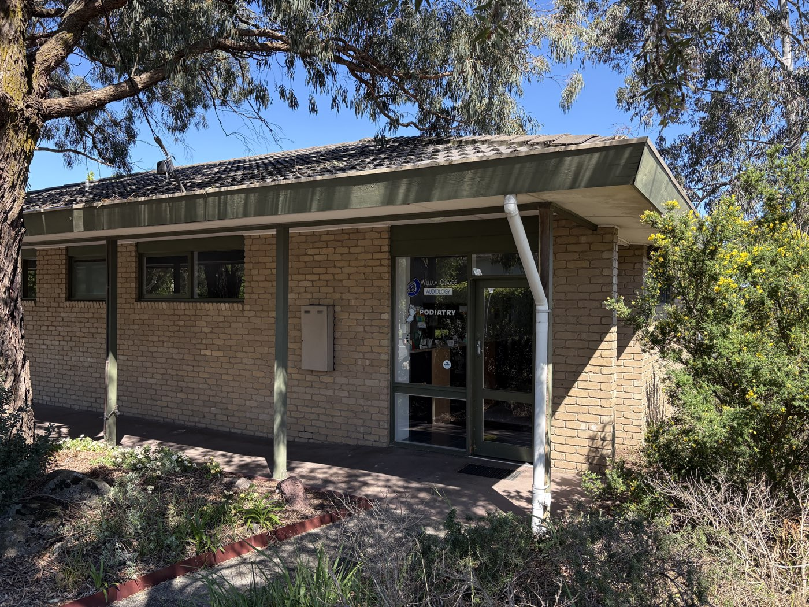

No noise.
Just a professional opinion.
Precision Acoustics is an independent audiology practice in Melbourne. When you are tired of all the noise and want to see an actual professional about your hearing, speak to us.

- IndependentNot owned by a hearing aid manufacturer or a chain.
- Adults and children from age threeSeen by a qualified audiologist at every visit.
- Pensioners and veterans welcomeA Hearing Services Program provider.
What we can help with
From a first hearing test to fixing hearing aids that were never quite right.
- Hearing assessmentsA full diagnostic test, with the results explained in plain English.
- Aviation, police and pre-employment hearing testsHearing assessments for job applications and workplace medicals.
- Hearing aid fittingIndependent advice on what will help, then careful fitting and fine-tuning.
- Hearing aid review and problem solvingAids fitted elsewhere that whistle, sound tinny or live in a drawer.
- Hearing aid repairsServicing and repairs to keep your devices working.
- Wax removalSafe, professional ear wax removal by an audiologist.
- Custom earplugsMade from an impression of your ear, for noise, swimming and sleep.
- Noise-induced hearing lossAssessment of suspected noise damage from work or recreation.
Independent means advice, not a sales target
Many hearing clinics are owned by the companies that make hearing aids. This one is not. You get the same straight answer whether or not you need a hearing aid, including when the answer is that you do not.
The practice is led by William (Bill) Olayos, an audiologist since 1985. He is a Fellow and past President of the Australian College of Audiology and one of the directors of the Hearing Professional Conduct and Complaints Body, which oversees the ethical conduct of hearing clinicians across Australia.
Your first visit
Four steps and no pressure. You leave knowing where your hearing stands.
A proper conversation
Your history, your concerns and what you want to hear better.
Thorough testing
A full, unhurried assessment in a fully soundproof room.
Results in plain English
What the chart means for your day-to-day life.
Honest options
Your choices explained, with no obligation to buy anything.
Three clinics, one phone number
Bookings for every clinic are made through Doncaster East.
Doncaster East
1034 Doncaster RoadDoncaster East VIC 3109
Open 9:00 am to 5:00 pm, no lunch closure.
Wheelchair accessible, with off-street parking and plenty of street parking.
-
Visiting clinic, first Friday of the month, by appointment
East Melbourne
1st Floor, 166 Gipps Street, East Melbourne VIC 3002 Open in Google Maps -
Visiting clinic, every Thursday, by appointment
Glen Waverley
Rear of Glenmount Medical Clinic, 598 High Street Road, Glen Waverley VIC 3150 Open in Google Maps
Pensioners and veterans
Precision Acoustics is a Hearing Services Program provider, so eligible pensioners and DVA card holders can be seen here. Not sure whether you are eligible? Ask when you call.
GPs and referrers
Referrals are welcome at all three clinics. Call (03) 9894 5433 or send your patient with a referral letter, and a report will normally go back to you after the visit, where appropriate.
When you are tired of all the noise, and you want to see an actual professional about your hearing, speak to us.